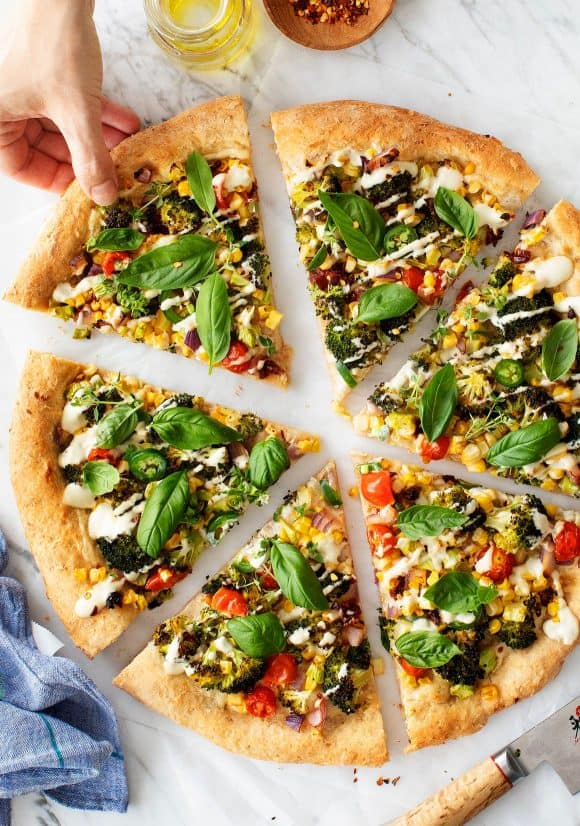

Return to Home Page
Return to Home Page
Loaded Crinkle-Cut Fries

Description:
Meet the best vegan pizza recipe! Loaded with broccoli, tomatoes, jalapeño, and creamy cashew sauce, this pizza is flavorful, satisfying, and fun to eat. You’re not even going to miss the cheese! Each veggie adds an interesting flavor and texture, and together, they make a pizza that tastes amazing. The broccoli gets all roast-y toasty, the corn pops with sweetness, the sun-dried tomatoes bring that tangy umami flavor, and the jalapeño brings some spice to this pizza party. The whole thing gets doused in a creamy/savory layer of cashew cream in lieu of any cheese or dairy. It’s a pizza recipe you can feel good about!
Ingredients
- sundried tomatoes
- Japaleno
- Cherry Tomatoes
- Brocolli stems
- Brocolli
- Cashew Cream
- Pizza Dough
- Basil
Steps
- Once you chop the veggies (even the stems of the broccoli!), toss them together in a bowl with olive oil, salt, and pepper until everything is well-seasoned and well-coated. While you do this, your partner could be stretching the pizza dough.
- To assemble your vegetarian pizza, spread just a thin layer of cashew cream onto the stretched dough. You want just enough so that the vegetables have something to stick to, but you don’t want the middle to become too gooey.
- he oozy cashew cream drizzle goes on at the very end. You don’t want to bake this cashew cream in the oven – it loses a lot of its creaminess if you do.
- So once the pizza comes out of the oven, drizzle the cashew cream very generously over the top. Finish with fresh basil and a sprinkle of red pepper flakes, if you like. Voila! Vegan pizza!